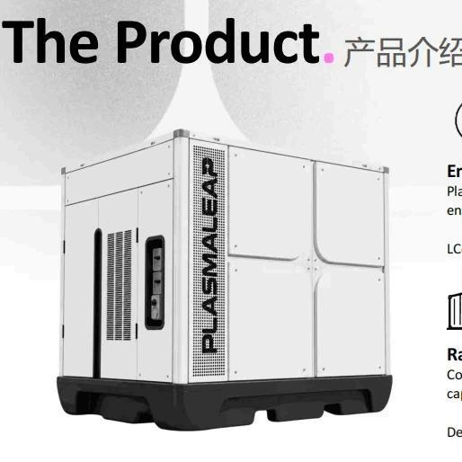
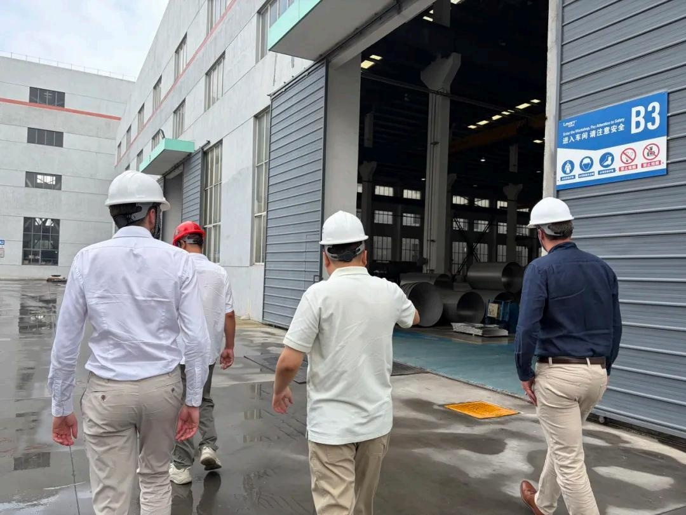
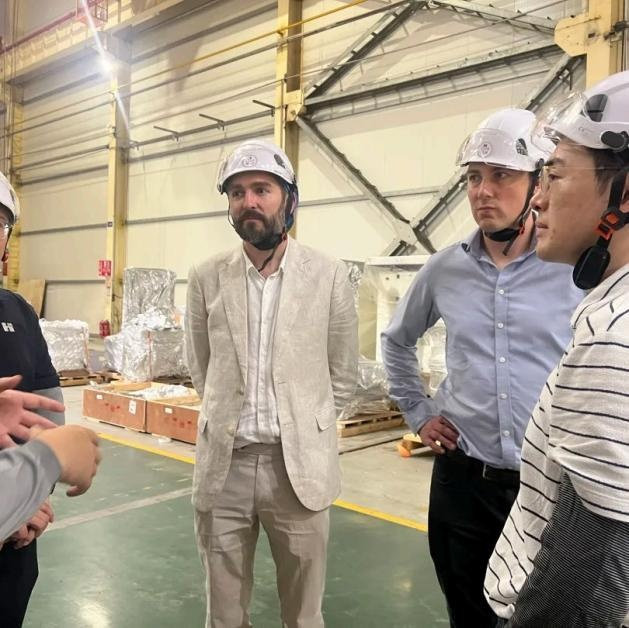
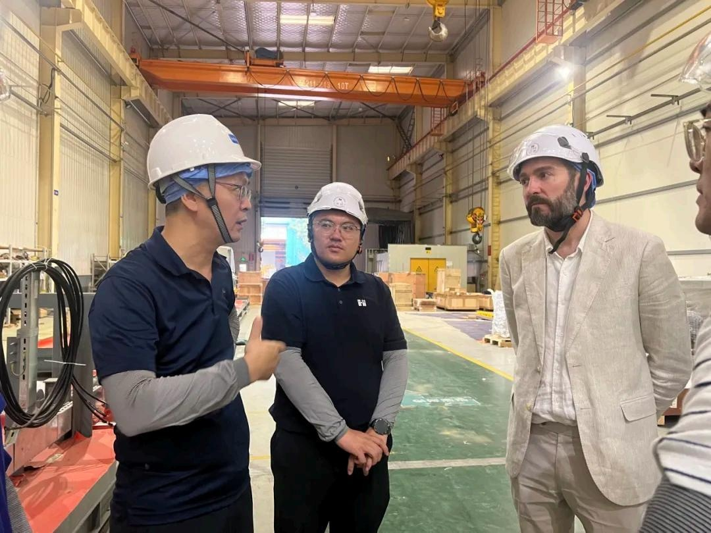
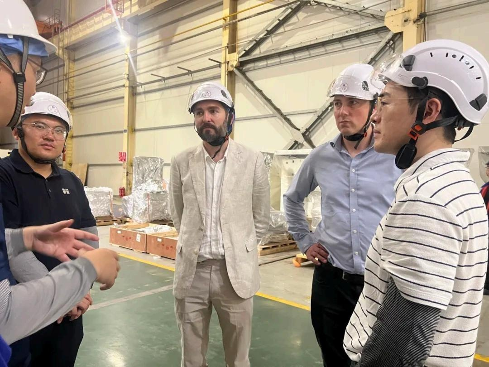
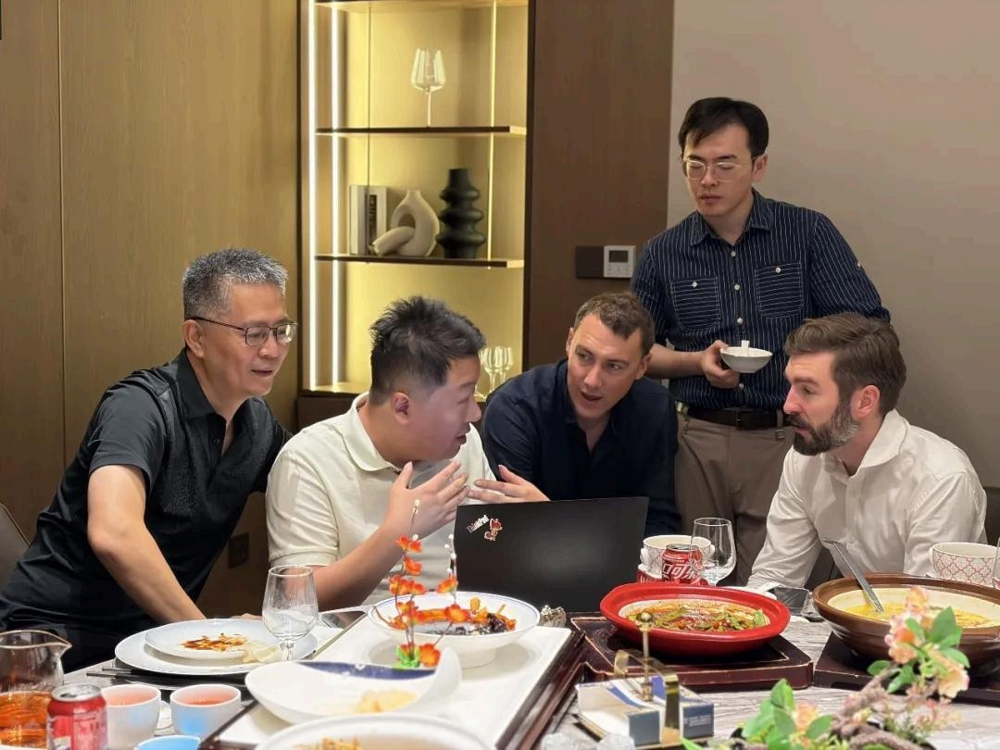
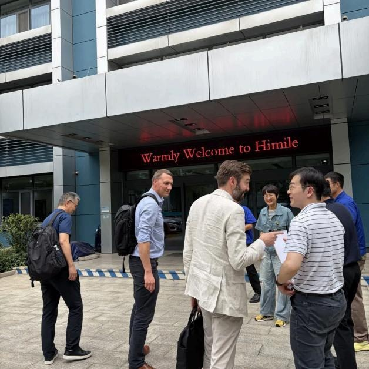

For any cross-border technology company, choosing a manufacturing partner is a due-diligence exercise: Is the equipment advanced? Are the lines disciplined? Is the quality system credible? Is communication smooth? Every detail determines whether a product will be delivered on time and to spec. PlasmaLeap's visit was exactly such a comprehensive manufacturing capability validation.

Air, water, and electricity — the three foundations of technological innovation. Carrying frontier technology concepts built on these fundamentals, the PlasmaLeap team traveled across the Pacific to Guangzhou to visit their candidate China manufacturing partner — Inertia Guangzhou — evaluating products, workshops, quality, and supply chain to verify whether their ideas could be trusted to a Chinese factory.
Part 1 Starting with Products: A First Impression of Manufacturing Capability
The visit began with products. At the sample display area, the PlasmaLeap team closely examined products Inertia Guangzhou has manufactured — from medical devices to smart hardware, from prototype parts to production units. A manufacturer's portfolio is the most direct evidence of its craftsmanship.
Surface finish, assembly precision, and part-to-part consistency silently answer one question: Can this factory turn our design into a trustworthy product?


Part 2 Walking the Floor: Seeing Is Believing
The tour then moved into the production workshop. From material staging to assembly lines, from inspection stations to packing areas, the PlasmaLeap team walked the real manufacturing flow: how process parameters are controlled, where inspection gates sit, how nonconforming product is isolated, and how lots are traced.
Under the ISO 13485:2016 quality management system, Inertia Guangzhou's workshop is not just "tidy on the surface" — every step is backed by documentation and every action has a record. This kind of auditable floor is exactly what cross-border clients value most.


Part 3 Context in the Conference Room: From Technical Requirements to Production Plans
Beyond the workshop, deeper collaboration discussions unfolded in the conference room. Around PlasmaLeap's product specifics, both teams exchanged views on technical requirement confirmation, DFM (design for manufacturing) reviews, production ramp schedules, and supply chain arrangements.
The biggest cost in cross-border collaboration is rarely equipment — it is lost context: the drift that occurs when design intent travels across time zones and languages. Inertia's dual-shore model lets the Toronto and Guangzhou teams speak one project language, ensuring every technical requirement is accurately translated into concrete actions on the production floor.


Part 4 Trust Is Built Over a Meal, a Truck, and a Group Photo
Manufacturing partnerships are, in the end, partnerships between people. During the visit, both teams shared many moments beyond the workshop and meeting room: studying product details together, discussing delivery milestones, and envisioning what mass production will look like.
From loading and shipping arrangements, one can see Inertia's end-to-end control of the delivery chain; from the group photos, one can see a relationship moving from "evaluation" toward "trust." PlasmaLeap's partner visit was about choosing a factory — and choosing a partner.
Capabilities Capabilities Validated by This Visit
- End-to-end manufacturing: full-chain validation from product showcase and workshop tour to quality and logistics
- ISO 13485:2016 quality system: controlled process parameters, defined inspection gates, and traceable lots
- Dual-shore collaboration: Toronto R&D + Guangzhou manufacturing, "no lost context" across borders
- DFM & production ramp: one-stop engineering support from design review to production launch
Air, water, and electricity are nature's fundamental resources; turning them into reliable products depends on every verifiable detail in the manufacturing chain. PlasmaLeap's visit marked the end of an evaluation — and the beginning of a cross-border manufacturing partnership.